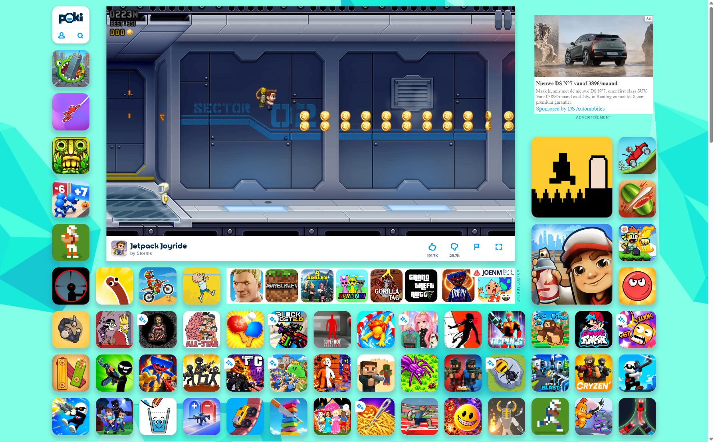
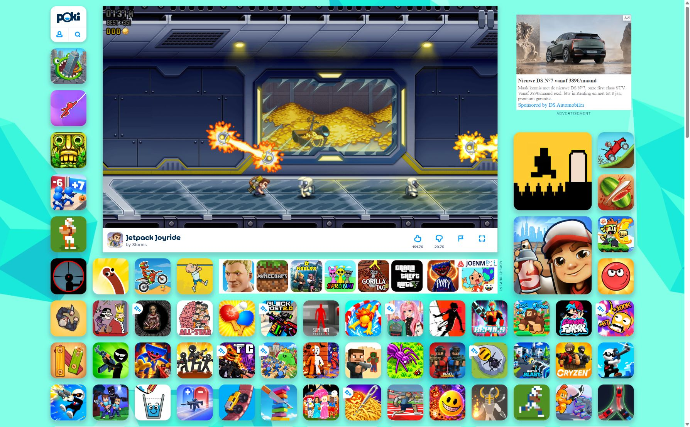

REFERENCE STUDY / 31 OCTOBER 2026
THE FLIGHT PLAN.
I played the public Jetpack Joyride web game on Poki, recorded the screens below, and checked the developer’s published explanations. Skumic is an original implementation informed by that study.
01 / One input. Continuous motion.
Observed: starting a run makes the laboratory scroll automatically. The character stays in roughly the same horizontal area. Holding Space lifts the character; release lets it descend. The screen below shows airborne flight at 222 metres and a two-row coin trail.
Corroboration: the web host’s control instructions specify holding Space, mouse or touch to ascend and releasing to descend.

02 / Read the gap.
Observed: electric hazards scroll toward the character. Consecutive frames in this session showed both vertical and horizontal gate orientations. In the following capture, the horizontal gate occupies the middle lane while the character travels beneath it. Coins form short patterns that invite changes of altitude.

Published, rather than directly observed in this short session: Halfbrick’s official App Store listing describes lasers, zappers and guided missiles. I implemented warned missiles and electric gates in Skumic. I did not independently measure the reference game’s missile timing, targeting or difficulty curves.
03 / A flight becomes a new target.
Observed: the end screen reports metres flown and coins collected, then offers a next step. The capture records 351 metres and zero coins. That gives the next attempt a clear target.
04 / Variety and progression.
Developer documentation: vehicle pickups introduce different transportation and controls. Power-ups activate on collection and can provide benefits such as a shield. Missions award stars toward ranks.
Those pages cover the developer’s product generally. They do not prove that every feature exists in the particular Poki web build I played. The web title screen in this session did visibly include a coin balance and settings, and the opening run displayed boost and shield offers.
05 / Current Skumic arcade edition.
No coins or purchases. Choose Skumic, Gauthier or Matar. Original notes charge combos and HYPE; marked drops in the playing song give exactly ten seconds of THE DROP; full hype amplifies the next drop with a ×5 combo. Sonic Pulse clears nearby hazards every nine seconds. Raveboard, Shield and the two-hit, automatically firing Bass Mech change the action. Six seeded encounter patterns include rotating zappers, warned laser lanes and missile volleys. Live setlist goals, score and personal records give the next run a target. All numbers and designs are original tuning.
06 / Fixed illustrated venues and real Skumic music.
The detailed recording-studio and concert-stage illustrations come from the user's earlier Skumic game. Each artist keeps one venue for the entire flight. Independent wall, rigging, speaker and floor layers scroll at different speeds; lights follow flight height and react to real audio energy. There are no automatic venue switches.
Street Fighter's BrandTheme.cs supplies the exact palette: #FA2D82 / #DCF105 / #410380 / #020105. Its original Motion Control Bold and ByteBounce fonts are reused unchanged, along with the supplied artist poses.
The soundtrack uses four existing MP3 recordings from the user's Skumic project: Ça Va Péter, Project Ravy 2.0, Puber and Manosfeer. Its track manifest identifies the recordings; embedded MP3 tags corroborate the first two. Skumic's official SoundCloud also identifies the artist as drum and bass. These are the provided recordings, without a generated music layer. Approximate tempo estimates are retained from the existing game. Authored drop cues are informed by strong bass/drum transitions in the supplied recordings. These signal-supported editorial choices are not an independently auditioned musical beat map.
Music defaults to a 4% slider setting with a fixed low output gain after the compressor. Warning and drop events do not change that gain. The recording plays continuously from its beginning. Musical drop markers trigger exactly ten seconds of invincibility, extra speed and hype effects in the game. The game never seeks or cuts the recording. Music pauses with gameplay. A visible volume slider and track selector retain your preferences. Quiet synthesised effects are used only for game feedback. File hashes and provenance are stored with the editable source.
What the evidence does and doesn’t establish.
- The screenshots are real browser observations from the referenced web game on 31 October 2026.
- No original game source, physics constants, random generator, complete content inventory or internal implementation was recovered.
- The new source and tuning are original choices. It contains no Halfbrick character art, game code, music or extracted assets. Reference screenshots appear here solely as the requested study evidence.
- The project is titled “Bluvn goan met Skumic”. This project is independent of Halfbrick.
- REA’s connected tools were unavailable in this session. Its diagnostic confirmed a missing client registration. The investigation used ordinary browser observation and primary web sources; these evidence labels are local report identifiers, not REA Evidence IDs.
Animation and readability update.
The three characters are larger in flight and in the chooser. Gauthier and Matar cycle five original poses from the existing Skumic Street Fighter artwork. The mascot uses an articulated flight suit. A pale outline and a local backdrop shade improve readability. Frame timing is frozen on pause and respects reduced-motion preferences. The source PNGs remain unchanged.
Confirmed Puber timing.
The user confirmed drops at 0:54, 1:38 and 2:22. Those exact times drive ten-second gameplay effects. Earlier estimates for Puber have been removed. Other tracks still use unverified editorial markers; they are not presented as exact musical annotations. The optional DROP TIMING control records or edits moments for each track without changing audio position.
Validation.
Fifty-two automated tests cover animation, physics, collision, seeded encounters, vehicles, pulse, combo/drop, setlist goals, fixed venue identity, save migration, volume bounds, constant gain, continuous song position and music-driven gameplay events and audio playback lifecycle. Browser checks confirmed real MP3 playback, changing tracks, pause/resume, mute, volume adjustment, original character selection, vehicle transformations and The Drop. The phone layout was checked at 390 × 844. Physical touch, every audio device and a full browser matrix remain untested.